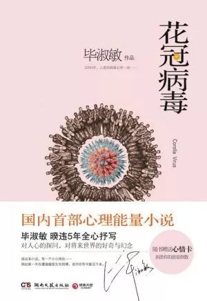
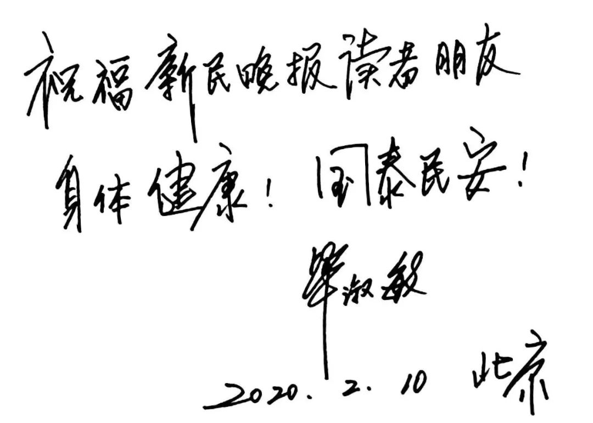
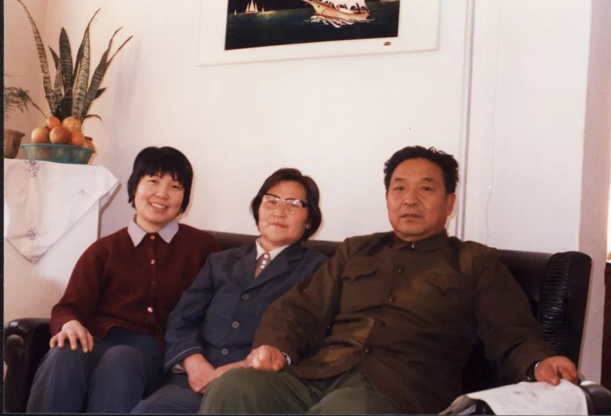
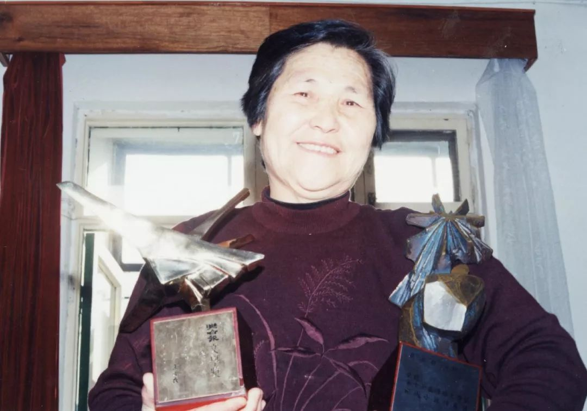

人畜共患病：病毒是如何入侵人类的？
原文链接 备份链接 人畜共患病（Zoonosis）是现代社会的一种非常危险的新型传染病。这些病毒（菌）平时躲在动物体内，不断地进行基因突变和基因重组，伺机寻找入侵人类的机会。 科学界主流观点认为，新冠与非典的源头来自蝙蝠，两场疫情相似度 …
《花冠病毒》8年前出版，很多情形，在现实中，复刻般上演。有人说，这书“神预言”，但作家毕淑敏不这么看自己的作品，她在接受本报独家专访时说：“那真不是我的本意。”

长篇小说《花冠病毒》
2003年，她曾深入北京抗击非典一线采访。
8年后，读了大量的书，做了很久的功课，甚至无数次在梦中见过病毒鲜艳而瑰丽的模样，她终于交出了一部长篇小说《花冠病毒》。小说的封底上写着，“20NN年，一种极其罕见的嗜血病毒——‘花冠‘突然袭击燕市，这座拥有千万人口的都市，沦为猎物。”
8年后，书中的很多情形，在现实中复刻一般上演。当年首印40万册的《花冠病毒》很快被买断了货，一些网友称这部小说“神预言”，但作家毕淑敏接受本报独家专访时说：“那真不是我的本意。”

毕淑敏寄语新民晚报读者
毕淑敏近影
01
天崩地裂，想象成真
关于新冠病毒，毕淑敏并没有比普通人知道得更早。“最初是从电视里看到，立马给武汉的朋友打电话，问近况如何？他们似乎没有什么特殊感觉，答一切如常。但我经历过非典，知道这种不明原因的肺炎，很可能蕴含着深重的灾难。”于是那些天，她非常关注新闻报道，“后来有几天没消息了。是突然好转了，莫名其妙地消失了？还是潜伏着人为的因素。不得其解，心中万分不安。”毕淑敏心有余悸地说，当她听到钟南山教授宣布“人传人”时，“刹时间只觉天崩地裂。”

上世纪70年代任军医的毕淑敏
这天崩地裂，是因为她了解病毒，了解城市，也了解人性。“我在非典采访中，涉及到各个层面，得到的信息量比一般人要多一些。《花冠病毒》的写作，也非急就篇，是在非典结束后大约七八年之后。我得以有更多的时间来收集资料和沉淀思考。”所以，她得出了“人类和病毒必有一战，甚至多次血战”的结论。关于瘟疫爆发之后的那些情况，毕淑敏冷峻地说，“都是可以想象出来的。”
比如物资缺乏，是可以想象到的，“任何灾难时刻，对于一个人口大国，民众的自保本能就是囤积生活必需品。城市再储备丰富，也经不住这种极强求生欲下的物资‘挤兑‘。”她进一步说明道，“我很担忧，若在一个超大城市发生瘟疫，会让问题变得极为复杂和令人惊惧。“于是，她选择了一个千万人口以上的大城市落笔。
02
曾经闻过，SARS气味
惊惧的感觉，这些年从未远离过毕淑敏。2003年的那次采访非典，从5月横跨至7月，辗转北京接治重症病人较多的佑安医院、朝阳医院、小汤山医院，还有北京疾控中心、基层防疫站和军事医学科学院等等。“在我的提议下，又去了外交部和国家气象中心、医疗垃圾处理中心……”
2003年毕淑敏参加非典采访团
“与SARS病毒如此贴近，我觉得自己闻到了它的味道。”毕淑敏顿了顿说，“病毒是没有味道的，我闻到的也许是排泄物和消毒液混合的味道。但袋子密封非常严，这味道也是闻不到的，只是我充满惊惧的幻觉。”
采访中最深刻的记忆还是感动。“那些医生护士，我如果在私下场合再见到他们，是不认识的。我没见过他们的脸，但我记得他们的声音，记得他们在危难时刻挺身而出。”毕淑敏说，当时非典病毒习性凶猛未知，为杜绝病毒粪口传播，病人的排泄物不能直排到抽水马桶中，必须排在便盆内，然后撒入消毒粉，有护士用搅拌棍手动搅拌消毒。“你可以想象这种工作的肮脏和危险。一个护士一干不知多少天，直到被传染自己也成了病人。我问这个护士，难道不能机械化？护士说，‘哪里来得及造个机器呢？’大疫过去了，人们就忘了。”毕淑敏说，这个细节让她记忆非常深刻。
03
共同战斗，须有信心
武汉抗疫，已是一场14亿中国人的共同战斗。
小到每个普通人。毕淑敏这个春节过得寂静而简单，“我连春晚都没有看完就睡下了。因为好的完整的睡眠，对身体的抵抗力非常重要。”大年初一吃的是速冻饺子，买菜需要外出，得尽量减免，“一是我和先生都已年近七十，保护不好自己，就是给子女和他人添麻烦；二是我家口罩基本用罄，现在都是旧口罩喷酒精晾干后再用，隔离效果不一定完善。”
毕淑敏近影
也大到家国天下。身在北京的毕淑敏很关注疫情的发展。“我会为医务人员的英勇献身而落泪，也为一天天增长的病患数字而忧心如焚，更望眼欲穿地期待解药和拐点的出现。”
这位有着心理医师资格证的作家，在《花冠病毒》的自序中写道：“在身体和心灵遭遇突变，就像本书中出现的那种极端困厄情况，最终能依靠的必是你的心理能量。”8年过去，她依然认为心理能量非常重要，“现在还没有特效药，唯一能指望的就是我们的心理不被摧毁，然后调动我们机体的所有力量来与病魔抗争。那天我听到一线报道说，信心比药物更重要。我很赞同这种说法。防疫中不要放弃信念，一旦染病，更是不放弃、不灰心，调动最大的抵抗力争取康复。”
04
如不悔改，灾难不远
展望前方，毕淑敏说，她相信中国人民一定最终能战胜疫情。补充道：“教训惨烈，会汲取了吧？我对人类的良知抱有审慎的信心。真的不思悔改，灾难肯定会在不远处等待我们。对这一点，没有侥幸。”她继续忧心忡忡道，“为什么要写《花冠病毒》，就是害怕瘟疫的再次袭来。上次已经很明确地锁定了野生动物是病毒的宿主，但人们还是好了伤疤忘了疼，继续重蹈覆辙，大啖野生动物，甚至把这当成荣耀和不同凡响。多么愚昧和危险的想法和行为。一个人在同一个地方跌倒两次，会奇怪他为什么不吸取教训。我们再不能跌倒第三次了。”

1989年毕淑敏与父母的合影
在小说的封底，毕淑敏问道：“人类与病毒的血战还在继续，命运将把他们带向哪里？”毕淑敏自问自答般说，病毒远远比人类更为古老。“如果一定非要说谁是地球主人，病毒一定比我们更有资格。病毒肆虐，它到底发生了怎样的变异？为何从原来的状态奔逸而出，疯狂地侵袭损害人类？我们如何与大自然的各种生物和平共处在这颗蔚蓝色的星球上？这些都值得我们深深思考。不然的话，灾难骤起时，我们不知道它从何而来。灾难离开时，我们也不清楚它因何而去。”如果只能跟新民晚报读者说一句话，毕淑敏想说——敬畏所有的生命，善待地球上的一切。
_
采访手记
如有征召，必担使命
17年前，跟毕淑敏一起去采访的还有另外七人，都是报告文学家。别人都是写了请战书主动要求去的，她没有写。因为毕淑敏当时与母亲同住，老人已是肝癌晚期，生命已经以月和星期来计算，毕淑敏怕母亲一旦病危……“我这一去，很可能连月隔离，我若给她送不了终，她会遗憾，我也终生不能原谅自己。所以作协同我商议此事时，我说，容我想一想。我母亲当时在旁边听到了这个电话，大致的意思她明白了。就对我说，国家有难，征召你，你岂有不去的道理。我说，我担心你。她摸着我的头说，孩子，我答应你，你去为众人的事儿忙吧。我活着等你回来……我就在第二天出征了。”

毕淑敏的母亲捧着女儿的奖杯
哪怕过去了17年，哪怕因为疫情采访不得不隔着上海到北京的距离，我仍然感受到一位作家滚烫的赤诚，尤其她还说：“我相信中国人民这一次一定能战胜疫情。疫情平复后，如有征召，我必担当使命。”
我想，正是因为有许许多多像毕淑敏这样“必担当使命”的医生护士、建设工人、基层干部，有平凡又可敬的普通劳动者，有善良的同胞，有自律的老百姓，疫情才会在未来被平复，被战胜。我也想，他们和我们，在更遥远的未来，再没有被“征召”的机会，再不用医生剃发出征，工人连续熬夜，再无须含泪抱别，舍小家为大家。我还想，每一个小家好，大家便是好的。
_
关于我们：
本公众号乃上海发行量最大的报纸《新民晚报》副刊《夜光杯》的官方微信，《夜光杯》是中国历史最悠久的报纸副刊，在微信平台，我们将以全新的面貌继续陪伴您。欢迎免费订阅，我们将每日精选两篇新鲜出炉的佳作推送到您的手机。所有文章皆为《夜光杯》作者原创，未经允许不得转载。
点击下面的篇目链接，可重读夜光杯微信公众号1月高点击率美文：
原文链接 备份链接 人畜共患病（Zoonosis）是现代社会的一种非常危险的新型传染病。这些病毒（菌）平时躲在动物体内，不断地进行基因突变和基因重组，伺机寻找入侵人类的机会。 科学界主流观点认为，新冠与非典的源头来自蝙蝠，两场疫情相似度 …
原文链接 备份链接 图为新型冠状病毒3CL水解酶的高分率晶体结构。上海科技大学免疫化学研究所和中国科学院上海药物研究所抗2019-nCoV冠状病毒感染联合应急攻关团队供图 本文约6431字 预计阅读时间17分钟 中青报·中青网记者 邱晨 …
原文链接 备份链接 关注疫情的同时，好好利用宅家时间静静读些书，就是在和病毒的抗争！ 年过七十，天天面对着疫情的蔓延，忧心如焚！做不成什么事情了。只能天天宅在家里读书，是文人常见的生活方式。不少文人还把呆在书房里安心读书，视为理想的人生状 …
原文链接 备份链接 今天来信的作者彼岸家住哈尔滨，疫情爆发之严重，使得这座远在中国东北方的城市也深受其害。在这段特殊时期里，身兼母亲、妻子、女儿、妹妹等多重角色的作者，渐渐发现家庭中的微妙转变。 居家防疫，一个东北小家庭的转变 撰文：彼 …
原文链接 备份链接 新冠疫情之下，一些 “神” 操作格外醒目。 大理截获重庆口罩，青岛沈阳互扣口罩；个别地区排挤湖北人、歧视武汉人；村子在挖路断交，小区禁止租户返回，无锡劝返外地人；四川专家误读“粪口传播”，中科院研究员带货双黄连，湖北官 …